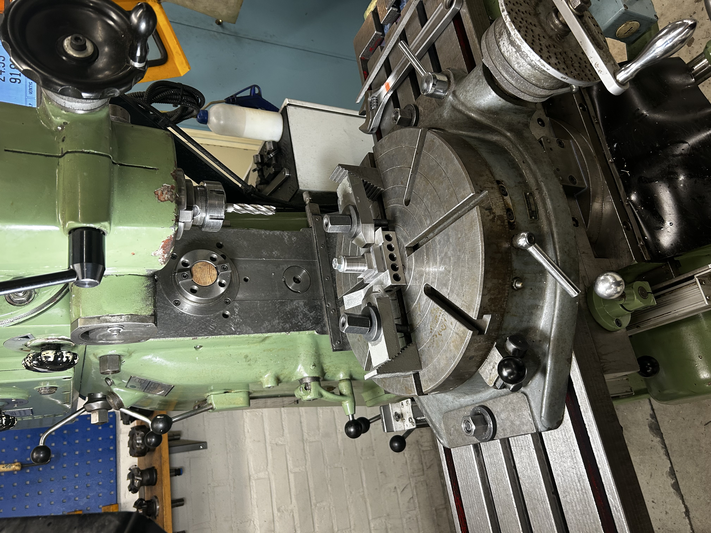
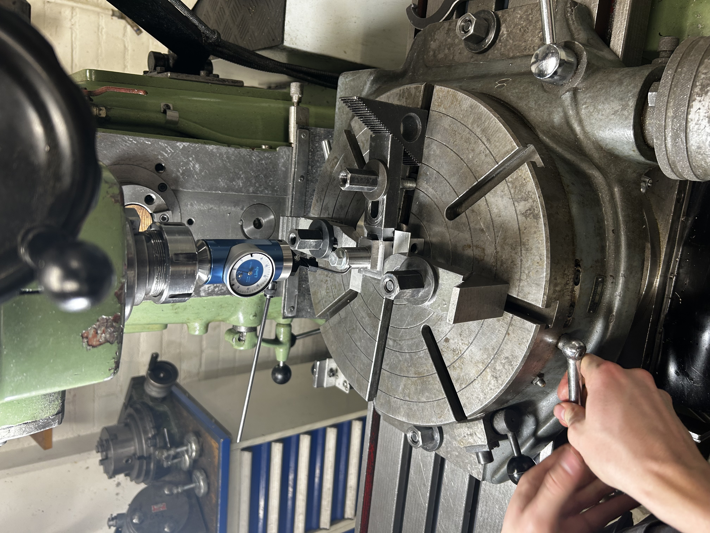
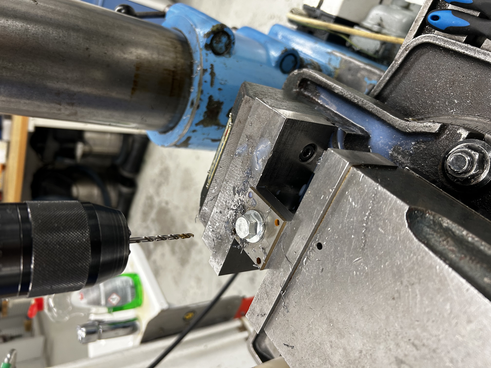
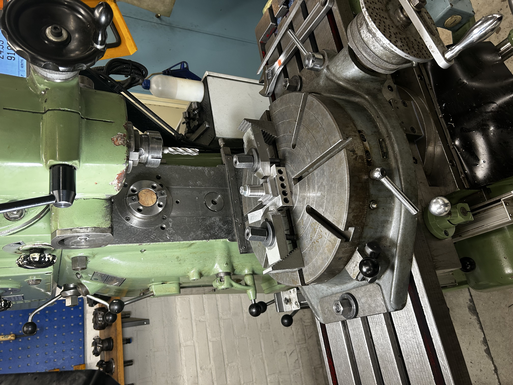
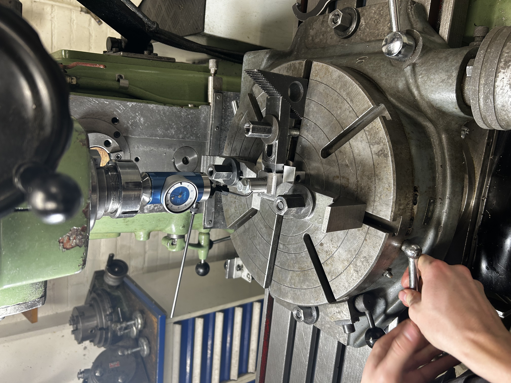
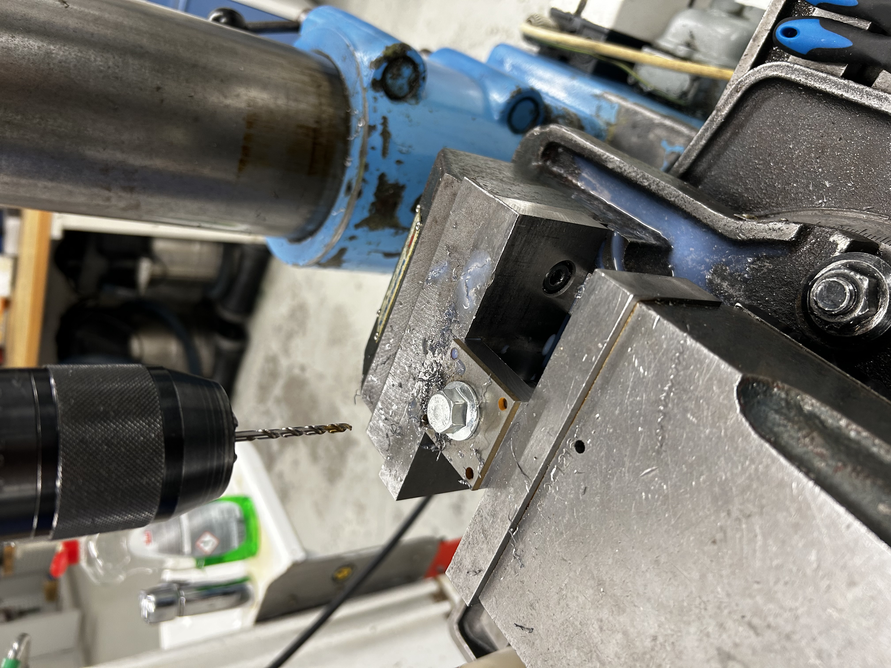

Overview
This project focused on the manufacturing of a custom steel fixture component developed to address deformation issues occurring during turning operations. The component was produced as part of a bachelor thesis project, where an existing shaft exhibited unwanted deformation when clamping forces were applied during machining.
To mitigate this issue, a dedicated locking component was designed to partially constrain the shaft’s motion, particularly in the axial direction. My responsibility in the project was to manufacture this component with high dimensional accuracy using only manual machine tools, ensuring correct fit, alignment, and functional reliability despite limited manufacturing resources.
The project placed strong emphasis on process planning, precision machining, and practical problem-solving under real workshop constraints.
Manufacturing Challenge
Several manufacturing challenges defined the project:
- Producing a precise internal diameter (Ø12.75 mm) critical for shaft fit and function
- Manufacturing a D-shaped internal locking feature with tight tolerance requirements
- Achieving concentricity between internal and external features
- Maintaining dimensional accuracy using only manual lathes and milling machines
- Avoiding excessive complexity in geometry to ensure manufacturability
- Managing surface finish limitations caused by machine rigidity
- Designing a solution suitable for prototyping and functional testing rather than mass production
The D-shaped feature in particular was identified early as the most critical and difficult element to manufacture with sufficient precision.
Manufacturing Approach
Material Preparation & Initial Machining
Manufacturing began from a 40 × 40 mm rectangular steel profile, which was face-milled down to an exact cross-section of 38 × 38 mm over a length of 100 mm. This ensured clean reference surfaces and consistent geometry before further operations.
Using an edge finder, the milling machine was accurately zeroed at the center of the workpiece, after which a pilot hole was drilled to prepare for subsequent turning operations.
Turning Operations & Internal Diameter Control
The block was then mounted in a lathe equipped with a four-jaw chuck. To achieve precise concentricity, an additional live center and a dial indicator were used to align the workpiece until minimal runout was achieved. This step was critical to ensure that all rotational features shared a common axis.
Once aligned, the outer cylindrical diameter was turned to specification. A 12.5 mm hole was then drilled and subsequently bored to a final diameter of exactly 12.75 mm using an internal boring bar.
Due to limited machine rigidity, some chatter occurred during internal turning, resulting in a surface finish that was not optimal but acceptable for the component’s function. As this was a prototype intended for functional validation, the resulting finish was deemed sufficient.
After turning, the remaining material was cut to length using a cold saw, and the cut surface was face-milled to ensure flatness and perpendicularity.
Milling & Radius Generation Using Rotary Table
The next step involved creating a partial cylindrical outer profile while maintaining one flat, parallel reference surface. This flat surface was intentionally preserved to allow secure clamping and reliable use of the component in operation.
Initial material removal was performed using a standard end mill to define the basic geometry. A rotary table was then mounted on the milling machine and carefully aligned using a rotating dial indicator. The workpiece itself was also dialed in to ensure its rotational center coincided precisely with the table’s axis.
The radius was generated using incremental cuts, low cutting forces, and continuous coolant to maintain control and avoid distortion. This approach ensured a smooth and accurate external profile while preserving the critical flat reference surface.
D-Feature Solution & Final Assembly
Early in the project, a full-length D-shaped internal slot was considered. However, this solution was rejected due to excessive manufacturing difficulty and low repeatability with the available equipment.
Instead, the D-shaped locking feature was waterjet-cut from 3 mm steel plate. This approach allowed high geometric accuracy without compromising manufacturability. Four holes were drilled and tapped with M4 threads in the main body, enabling the D-shaped plate to be securely fastened to the block.
This modular solution simplified manufacturing while still fulfilling all functional requirements of the design.
Result
The final component met all functional and dimensional requirements for its intended use. The internal bore, external geometry, and D-shaped locking feature aligned correctly, providing the intended axial constraint and improved stability during turning operations.
This project demonstrates proficiency in:
- Manual lathe and milling machine operation
- Precision alignment using dial indicators and four-jaw chucks
- Manufacturing-driven design decision-making
- Tolerance management without CNC equipment
- Practical fixturing and process planning
- Prototyping under real-world workshop constraints
Overall, the project highlights strong hands-on manufacturing skills and the ability to translate a conceptual solution into a functional, high-precision mechanical component using limited but well-controlled production methods.
 




